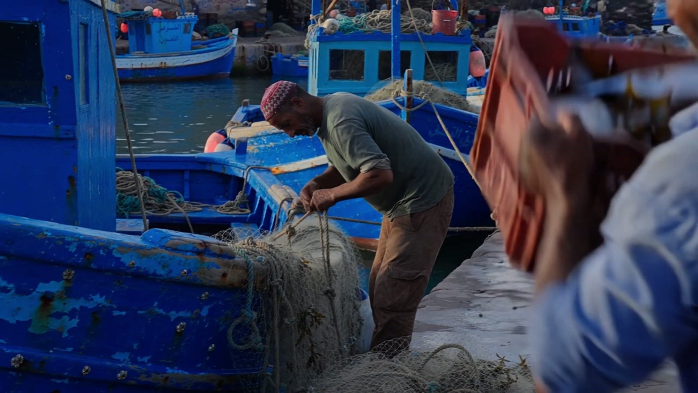
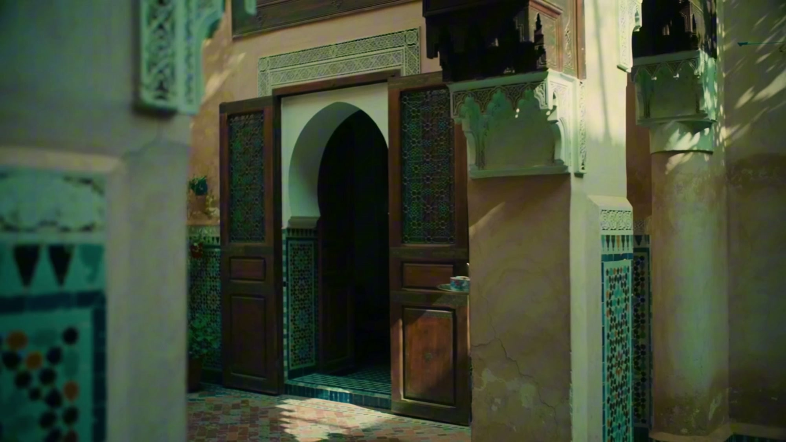
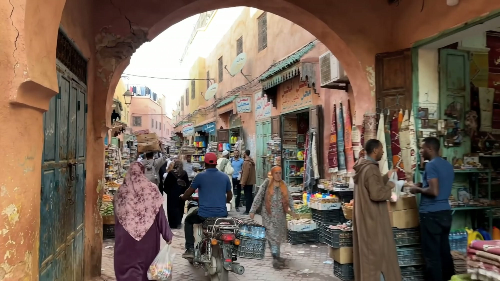
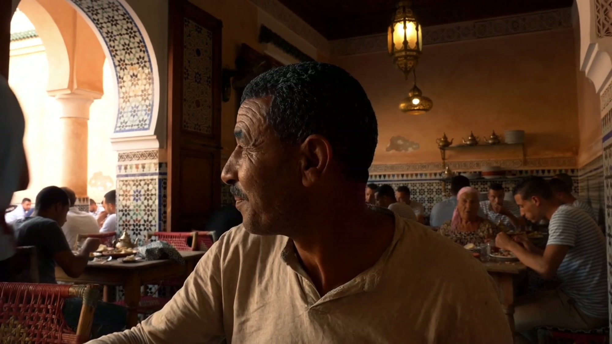

AI 影像实验 · 影像剪辑 × 声音设计 × 调色 · 约 2 分钟
这是一支以北非为主题的 AI 生成影像实验。作品尝试以真实纪录片的影像语言，重构一个关于北非城市、建筑、街道与日常生活的视觉空间。
我将 AI 生成的画面作为创作素材，并不满足于单个画面的视觉呈现，而是试图探索：当影像并非真实拍摄时，我们能否通过后期创作，让它在视觉、听觉与叙事层面尽可能接近真实？
在创作过程中，我对生成素材进行了重新筛选与组织，通过镜头景别、运动方向、空间关系和画面节奏的控制，将原本彼此独立的场景连接起来，建立一条具有连续空间感和叙述逻辑的影像线索。
同时，我重新设计了声音层次与环境氛围，通过环境音、空间混响、音乐和声音衔接，增强不同场景之间的真实感与现场感；并对画面进行统一调色，在光影、色彩、反差和影像质感上建立相对一致的视觉风格。
对我而言，这不仅是一次 AI 影像生成的尝试，也是一次关于影像真实性的实验。
当真实的拍摄过程被生成技术取代，创作者又能通过怎样的审美判断与后期控制，让影像重新获得可信的质感？



